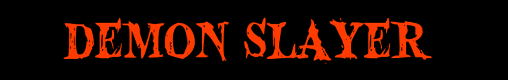
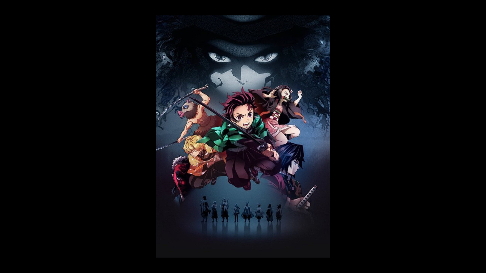

Demon Slayer: Kimetsu no Yaiba , "Blade of Demon Destruction" is a Japanese manga series written and illustrated
by Koyoharu Gotouge. It was serialized in Shueisha's shōnen manga magazine Weekly Shōnen Jump from February 2016
to May 2020, with its chapters collected in 23 tankōbon volumes. It has been published in English by Viz Media
and simultaneously published by Shueisha on their Manga Plus platform. It follows teenage Tanjiro Kamado,
who strives to become a Demon Slayer after his family was slaughtered and his younger sister, Nezuko,
turned into a demon.

The story takes place in Taishō era Japan, where a secret society, known as the Demon Slayer Corps,
has been waging a secret war against demons for centuries. The demons are former humans who were turned
into demons by Muzan Kibutsuji injecting them with his own blood, and they feed on humans and possess
upernatural abilities such as super strength, powers that demons can obtain called "Blood Demon Art", and
regeneration. Demons can only be killed if they are decapitated with weapons crafted from an alloy known
as Nichirin, injected with poison extracted from wisteria flowers, or exposed to sunlight. The Demon Slayers,
on the other hand, are entirely human. However, they employ special elemental breathing techniques, known as
"Breathing Styles", which grant them superhuman strength and increased resistance, helping them fight against
demons. The strongest Demon Slayers are known as the Hashira, and gain this rank through either killing a
member of the Twelve Kizuki (the twelve strongest demons under Muzan) or killing fifty demons after ranking
up multiple times.